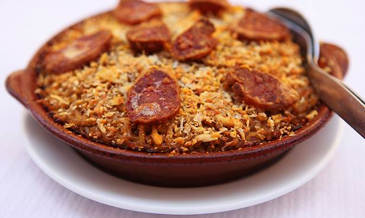

ARROZ DE PATO

INGREDIENTS
- 4 duck legs
- Salt and pepper, to taste
- 2 tablespoons olive oil
- 1 onion, chopped
- 2 garlic cloves, minced
- 2 bay leaves
- 1 1/2 cups Arborio rice
- 1/2 cup dry white wine
- 4 cups chicken broth
- Chopped parsley and lemon
wedges, for garnish (optional)
INSTRUCTIONS
- Preheat the oven to 375°F (190°C).
- Season 4 duck legs with salt and pepper.
- In a large Dutch oven or oven-safe pot, heat 2 tablespoons of olive oil over medium-high heat.
- Add the duck legs and cook until browned on both sides, about 6-8 minutes per side. Remove the duck
legs from the pot and set aside.
- Lower the heat to medium and add 1 chopped onion, 2 minced garlic cloves, and 2 bay leaves. Cook until the onion is translucent, about 5 minutes.
- Add 1 1/2 cups of Arborio rice and stir until the rice is coated in the oil and onions.
- Add 1/2 cup of dry white wine and stir until the wine has evaporated.
- Add 4 cups of chicken broth and stir to combine.
- Place the duck legs on top of the rice mixture and push them down into the broth so that they are
partially submerged.
- Cover the pot and transfer it to the oven. Bake for 45-50 minutes, or until the rice is tender and the
duck is cooked through.
- Remove the pot from the oven and let it sit, covered, for 5 minutes.
- Remove the duck legs from the pot and shred the meat, discarding the skin and bones.
- Fluff the rice with a fork and add the shredded duck meat back to the pot. Stir to combine.
- Serve hot, garnished with chopped parsley and lemon wedges if desired.
- Enjoy your delicious Arroz de Pato!